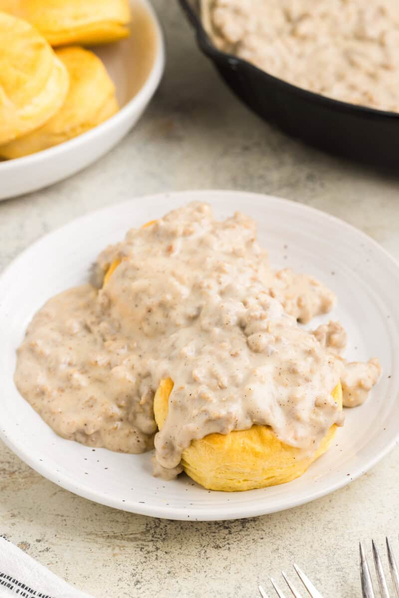
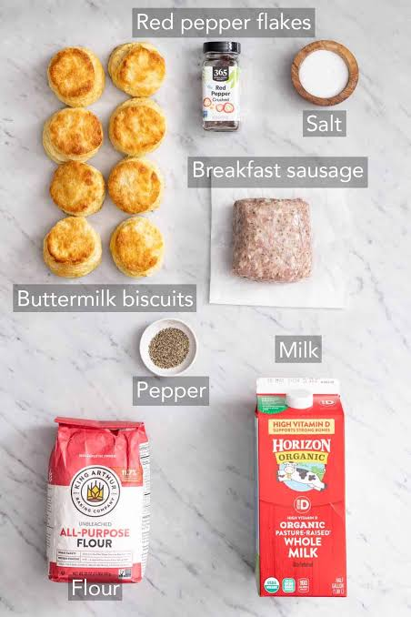

Description
Biscuits and Gravy is a classic Southern breakfast dish featuring fluffy biscuits topped with rich and savory sausage gravy.
This comforting meal is simple to prepare and makes a hearty breakfast that is perfect for weekends or family gatherings.
Ingredients

- 1 can refrigerated biscuits
- 1 package pork breakfast sausage
- 1/4 cup all-purpose flour
- 2 1/2 cups milk
- Salt and pepper to taste
Instructions
- Preheat the oven to 350°F (175°C).
- Bake the biscuits according to package directions until golden brown.
- While the biscuits bake, cook the sausage in a large skillet over medium heat.
- Sprinkle the flour over the cooked sausage and stir well.
- Gradually add milk while stirring continuously.
- Cook until the gravy thickens and begins to simmer.
- Season with salt and pepper to taste.
- Split the biscuits and serve with plenty of sausage gravy on top.